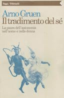
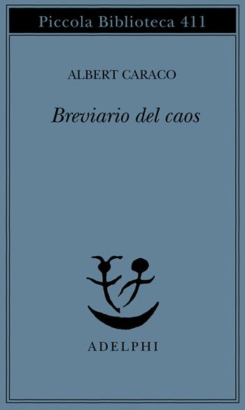
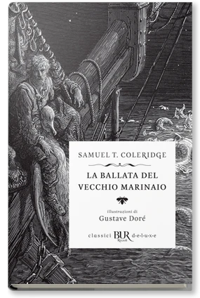
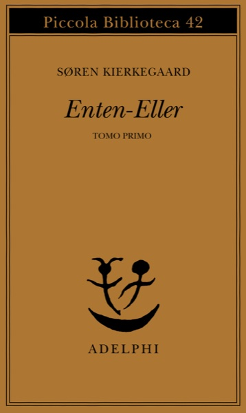

1:26:21 · 16 OPERE
Conversazione su alcuni temi del libro: "L'ideologia del lupo".
Il filo del discorso
Una conversazione con Dr Divago sul rapporto fra potere, educazione e autonomia personale, a partire da L’ideologia del lupo. La figura del lupo, affiancata a quella del pastore, introduce la critica dell’autore alle gerarchie e alla riduzione delle persone a strumenti. Il confronto attraversa le definizioni del potere nella psicologia dei gruppi, il linguaggio della propaganda e le letture di Orwell. Con Arno Gruen e Adorno, gli interlocutori discutono il disagio dell’individuo e il ruolo dell’educazione; con Caraco, la difficoltà di far circolare un pensiero indipendente. Nell’ultima parte la lettura di Kierkegaard apre il tema del dialogo interiore, mentre il richiamo a Kant riporta alla responsabilità del giudizio. La chiusura presenta il libro come invito a costruire una propria comprensione del mondo. Le interpretazioni storiche e politiche espresse appartengono agli interlocutori.
I libri nel discorso

L’ideologia del lupo
Copertina: Presentazione dell’autore, 2024
Titolo all’inizio, sottotitolo Nei passaggi citati secondi e autore indicato a 00:28 e 01:00; è l’opera oggetto della conversazione.
Passaggio 0:07 ↗ · Fonti e libro ↗
Il disagio della civiltà
Copertina: Einaudi, 2010
Prima delle due opere attribuite a Freud all’avvio del colloquio.
Passaggio 1:33 ↗ · Fonti e libro ↗
Psicologia delle masse e analisi dell’Io
Identificazione probabile
Copertina: Einaudi, 2013
Seconda opera di Freud; i sottotitoli collegano Psicologia delle masse e Io, omettendo analisi.
Passaggio 1:34 ↗ · Fonti e libro ↗Fare squadra
Copertina: il Mulino, 2018
Manuale presentato a 12:59, cognome e titolo a 13:04–13:10, seguito dalla lettura di due definizioni.
Passaggio 13:04 ↗ · Fonti e libro ↗
Nel ventre della balena
Copertina: Bompiani, 2013
Titolo della raccolta nominato prima di una lettura; Orwell indicato nel seguito.
Passaggio 25:24 ↗ · Fonti e libro ↗
La fattoria degli animali
Copertina: A. Mondadori Scuola · edizione scolastica
Nominato insieme a 1984 come esempio di rappresentazione allegorica.
Passaggio 29:10 ↗ · Fonti e libro ↗
1984
Copertina: Newton Compton · edizione illustrativa
Nominato immediatamente dopo La fattoria degli animali.
Passaggio 29:14 ↗ · Fonti e libro ↗
Il tradimento del sé
Copertina: Feltrinelli, 1992
Nome e titolo sono riconoscibili nella trascrizione automatica a 39:21–39:28; il seguito tratta lo sviluppo dell’autonomia. Riferimento da confermare all’ascolto.
Passaggio 39:26 ↗ · Fonti e libro ↗
Minima moralia
Copertina: Einaudi, 2015
Autore e titolo nominati a 44:04 nel discorso sull’individuo ferito; segue una parafrasi del sottotitolo tedesco.
Passaggio 44:04 ↗ · Fonti e libro ↗
Breviario del caos
Copertina: Adelphi, 1998
Titolo e autore espliciti prima della lettura di un breve passaggio.
Passaggio 52:31 ↗ · Fonti e libro ↗
La ballata del vecchio marinaio
Identificazione probabile
Copertina: BUR Rizzoli · illustrazioni di Gustave Doré
Gli interlocutori nominano il vecchio marinaio di Coleridge e raccontano l’incontro iniziale del poema.
Passaggio 57:58 ↗ · Fonti e libro ↗
Metafisiche del mondo
Copertina: Copertina riprodotta nella recensione di Domenico Conversa
Titolo nominato con scambio fra i due interlocutori a 1:07:50–1:07:56 come precedente testo dell’ospite.
Passaggio 1:07:50 ↗ · Fonti e libro ↗Perché la guerra?
Identificazione probabile
Copertina: Feltrinelli, 2026 · Perché la guerra? e altri scritti
Riferimento esplicito a Einstein e alla lettera a Freud, seguito dalla domanda sulla minoranza che mobilita la massa per la guerra.
Passaggio 1:08:40 ↗ · Fonti e libro ↗
Aut-Aut
Identificazione probabile
Copertina: Adelphi · Enten-Eller, I (volume di riferimento)
La copertina illustra il primo volume della traduzione Adelphi di Enten-Eller, opera nota come Aut-Aut. Il volume effettivamente citato non è identificato.
L’intervistatore dice di aver iniziato a leggere Kierkegaard e un titolo reso foneticamente dai sottotitoli come out out.
Passaggio 1:09:51 ↗ · Fonti e libro ↗
Critica del giudizio
Copertina: Bompiani, 2015
Titolo e autore nominati nella riflessione conclusiva sul giudizio autonomo.
Passaggio 1:19:57 ↗ · Fonti e libro ↗
Critica della ragion pratica
Copertina: Bompiani, 2000
Titolo nominato a 1:20:10–1:20:13 nel confronto con la Critica del giudizio.
Passaggio 1:20:10 ↗ · Fonti e libro ↗